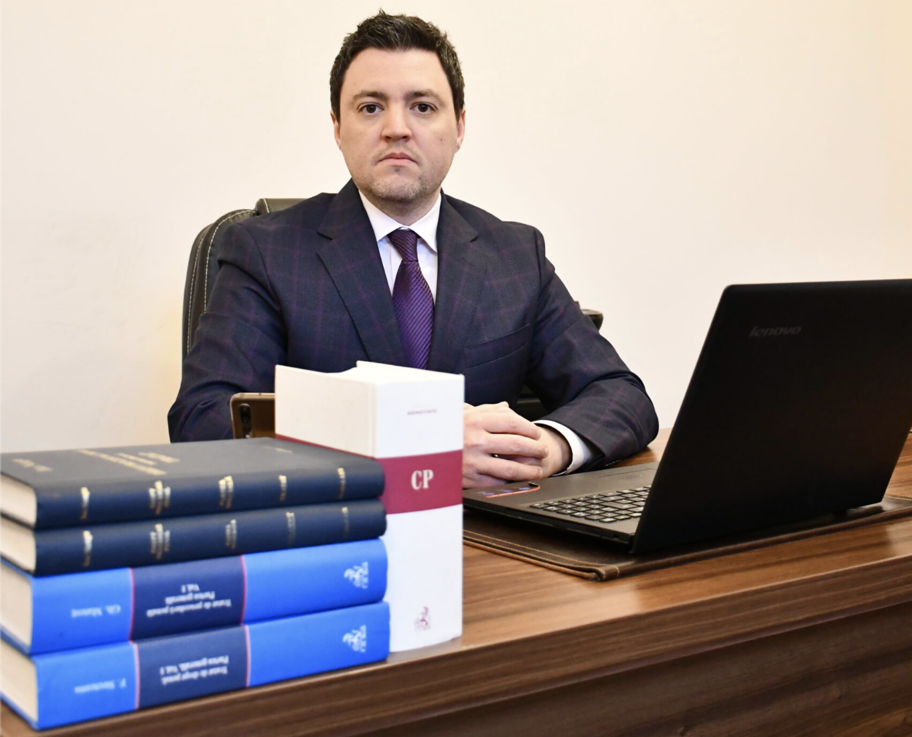

Avocat divorț Bacău
Un divorț poate implica numeroase aspecte legale și emoționale. Dacă te afli în această situație, ai nevoie de un avocat de divorț în Bacău care să îți protejeze drepturile și să îți ofere cele mai bune soluții juridice.
Cabinet de Avocat în Bacău
Avocat în Bacău, membru al Baroului Bacău din ianuarie 2009. Asistență și reprezentare juridică în drept civil, penal, comercial și dreptul familiei.

Despre cabinet
Avocat în cadrul Baroului Bacău din ianuarie 2009, profesez zilnic pentru a mă asigura că cei care apelează la serviciile Cabinetului de Avocat Tănase Bogdan-Constantin beneficiază de aplicarea legii de către instituțiile statului atât în litera, cât și în spiritul ei.
Lipsa unei educații juridice, dar și ineditul vieții îi aduc pe mulți în situații neprevăzute în care au nevoie să fie reprezentați de avocat. Sunt numeroase situațiile în care absența unui avocat în fazele incipiente ale unui dosar, fie el penal sau civil, complică bunul mers al acestuia, de aceea asistența de specialitate este foarte importantă în obținerea rezultatelor optime.
Pe lângă asistența juridică, foarte importantă este relația avocat-client, de aceea aleg întotdeauna să clădesc o colaborare sinceră, directă, fără așteptări nerealiste.
Cabinetul oferă asistență și reprezentare juridică în fața tuturor instituțiilor statului român, de la Poliție și Parchete până la Judecătorii, Tribunale, Curți de Apel și Înalta Curte de Casație și Justiție, în probleme de drept penal, civil, comercial, contencios administrativ și alte ramuri, atât persoanelor fizice, cât și persoanelor juridice.
Domenii de practică
Soluții clare, comunicare directă și reprezentare profesionistă pentru situațiile cu care te confrunți.
Un divorț poate implica numeroase aspecte legale și emoționale. Dacă te afli în această situație, ai nevoie de un avocat de divorț în Bacău care să îți protejeze drepturile și să îți ofere cele mai bune soluții juridice.
Divorțul cu minori implică stabilirea aspectelor esențiale, precum custodia, locuința minorului, programul de vizită și pensia de întreținere, cu prioritate pentru interesul superior al copilului.
După desfacerea căsătoriei trebuie stabilit regimul juridic al bunurilor dobândite în timpul căsătoriei. Bunurile vor fi împărțite în funcție de contribuția fiecărui soț și de alte criterii legale.
Dacă ai fost implicat într-un episod de violență domestică, te pot ghida prin procedura legală și prin drepturile și obligațiile pe care legea le prevede în această situație.
Dacă ești nemulțumit de o amendă primită, aceasta poate fi contestată. Primul efect este suspendarea procesului-verbal pe toată durata judecării plângerii.
Asistență și reprezentare în fața organelor de urmărire penală și a instanțelor, în toate fazele procesului penal, cu accent pe respectarea drepturilor procesuale ale clientului.
De ce să mă alegi
Membru al Baroului Bacău din ianuarie 2009, cu peste 17 ani de practică în drept civil, penal și dreptul familiei.
Costurile sunt discutate clar la prima întâlnire, în funcție de complexitatea dosarului. Fără surprize și fără costuri ascunse.
Aleg să clădesc o colaborare sinceră, fără așteptări nerealiste. Vei ști în orice moment unde se află dosarul tău.
Întrebări frecvente
Programarea se face telefonic la +40 745 025 701 sau prin formularul de contact. Vei primi confirmarea zilei și a orei rezervate.
Onorariul se discută transparent la prima întâlnire, în funcție de complexitatea dosarului și de etapele necesare. Nu există costuri ascunse.
Da. Cabinetul oferă asistență și reprezentare juridică în fața instanțelor de pe întreg teritoriul României.
În situațiile urgente, precum reținere, audieri sau ordin de protecție, te rog să suni direct la +40 745 025 701.
Contact
Programează o consultație la cabinetul din Bacău sau sună pentru o discuție inițială.